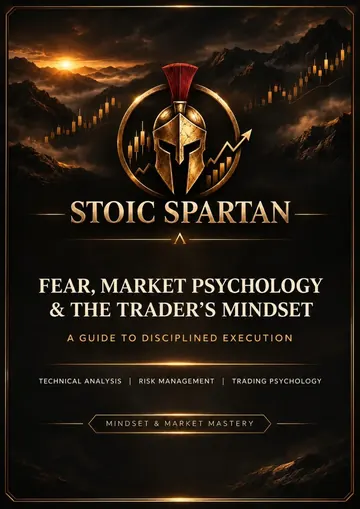
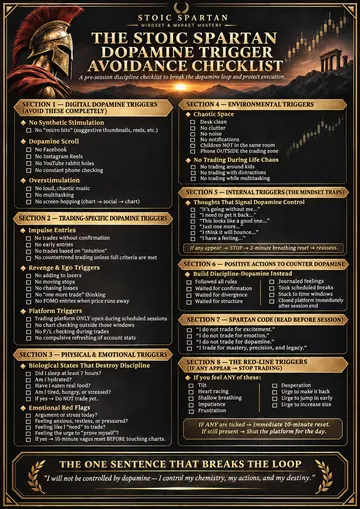

Free Academy guide · 9 pages
Fear, Market Psychology & The Trader’s Mindset
Explore market sentiment, probability, position sizing and the discipline of executing a defined trading process despite uncertainty.
Stoic Spartan Academy
The Academy will turn an existing body of research, teaching material and trader-performance tools into practical resources you can actually use.
Free resources

Explore market sentiment, probability, position sizing and the discipline of executing a defined trading process despite uncertainty.

A pre-session discipline checklist to break the dopamine loop and protect execution.
Stoic Spartan · Mindset & Market Mastery
The Stoic Spartan Dopamine Trigger Avoidance Checklist
A pre-session discipline checklist to break the dopamine loop and protect execution.
If any appear → STOP → 2-minute breathing reset → reassess.
IF ANY are ticked → Immediate 10-minute reset.
If still present → Shut the platform for the day.
“I will not be controlled by dopamine — I control my chemistry, my actions, and my destiny.”
A practical pre-session framework designed to reduce unnecessary stimulation and help traders arrive at the market in a more controlled decision-making state.
Academy release being preparedClean desk. Review charts. Read the previous week's journal. Prepare mission and visualisation statements. Enter Monday deliberately, not reactively.
Academy release being preparedRisk, drawdown, consistency rules, scaling and evaluation planning.
A structured way to evaluate process, execution, risk and psychology.
Concise lessons on technical execution, risk and behavioural performance.
Educational content distilled from 46 existing research documents across technical analysis, markets and performance.
Pre-market, post-market, psychology, risk and execution frameworks.
Risk calculators, journals, evaluation planners and performance-analysis templates.
“When the student is ready, the teacher appears.”
Education and coaching, not a guarantee of profitability, funding or payouts. Trading involves substantial risk.